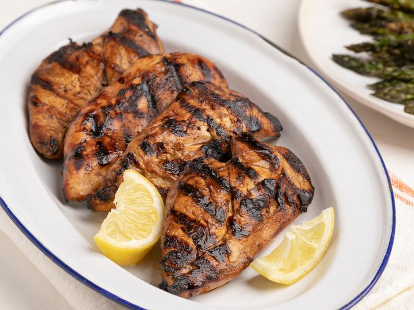

Chicken Marinade

Description
Irresistibly juicy, chargrilled chicken begins with a well-executed marinade - and we have a perfectly smoky, salty, and delicious chicken breast marinade recipe that gets the job done every time.
Blend of low-sodium soy sauce, liquid smoke, spicy brown mustard, and lemon creates a rich flavor that will make you the star of the cookout.
Ingredients
- 2/3 cup olive oil
- 2/3 cup low-sodium soy sauce
- 1/4 cup lemon juice
- 2 tablespoons liquid smoke flavoring or to taste
- 2 tablespoons spicy brown mustard
- 2 teaspoons ground black pepper
- 2 teaspoons garlic powder
- 4 skinless, boneless chicken breast halves
Steps
- Gather the ingredients
- Mix olive oil, soy sauce, lemon juice, liquid smoke,
mustard,pepper, and garlic powder together in a large glass or ceramic bowl.
- Place chicken in the bowl and turn to coat with marinade. Cover and marinate in the refrigerator for 1 to 4 hours. For best results, do not marinate longer than 4 hours.
- Preheat an outdoor grill for high heat and lightly oil the grate.
- Remove chicken from the marinade and shake off excess. Discard the remaining marinade.
- Cook chicken on the preheated grill until no longer pink in the center and the juices run clear, 6 to 8 minutes per side. An instant-read thermometer inserted into the center should read at least 165 degrees F (74 degrees C).
- Serve and enjoy!
Home